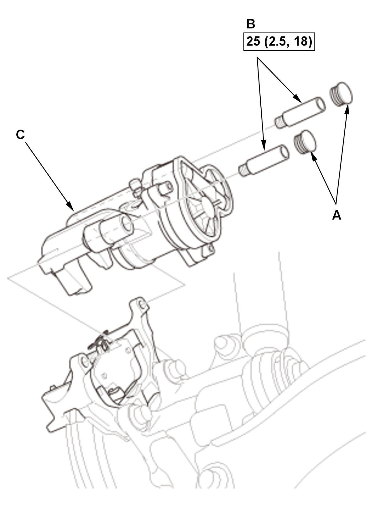
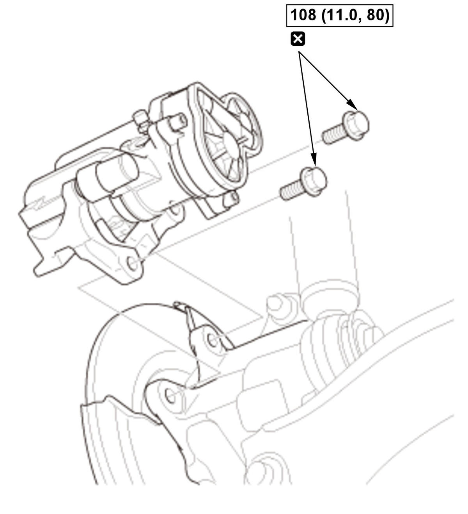

Removal and Installation
NOTE:
- How to read the torque specifications .
- Review the Service Precautions before doing repairs or service .
- Vehicle - Lift
- Rear Wheel - Remove
- Parking Brake - Release
- Connector (Electric Parking Brake Actuator) - Disconnect
NOTE: If the connector lock tab is difficult to release, push in on the connector body before pushing on the release lock.
- Brake Hose - Remove
1. Disconnect the brake hose from the caliper body . - Brake Caliper Body - Remove (If necessary)
1. Remove the housing clip (A). 
Courtesy of HONDA, U.S.A., INC.2. Remove the caps (A). 3. Remove the pin bolts (B).
4. Remove the caliper body (C).
5. '20-21 Type-R: Remove the outer brake pad (If necessary)
.
- Brake Caliper - Remove

Courtesy of HONDA, U.S.A., INC.NOTE: Use new brake caliper mounting bolts during installation.
- Electric Parking Brake Actuator - Remove (If necessary)
- All Removed Parts - Install
1. Install the parts in the reverse order of removal. - Brake System - Bleed
- Brake Caliper After Install - Check
1. Turn the vehicle to the ON mode. 2. Apply and release the parking brake 2 times, then make sure that the brake system indicator (red) goes OFF.
NOTE: If the brake system indicator (red) does not go OFF, check for a poor connection at the electric parking brake actuator connector.
3. Turn the vehicle to the OFF (LOCK) mode.